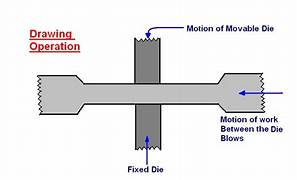
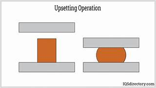
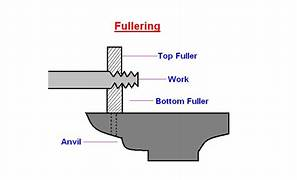
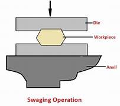
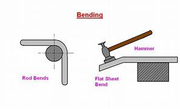
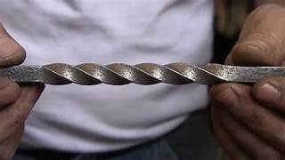
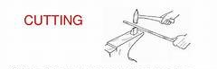

The following are the basic operations that may be performed by hand forging:
Drawing is the process of stretching the stock while reducing its cross-section locally. Forging the tapered end of a cold is an example of drawing operation.
It is a process of increasing the area of cross-section of a metal piece locally, with a corresponding reduction in length. In this, only the portion to be upset is heated to forging temperature and the work is then struck at the end with a hammer. Hammering is done by the smith (student) himself, if the job is small, or by his helper, in case of big jobs, when heavy blows are required with a sledge hammer.
Fullers are used for necking down a piece of work, the reduction often serving as the starting point for drawing. Fullers are made of high carbon steel in two parts, called the top and bottom fullers. The bottom tool fits in the hardie hole of the anvil. Fuller size denotes the width of the fuller edge.
Flatters are the tools that are made with a perfectly flat face of about 7.5 cm square. These are used for finishing flat surfaces. A flatter of small size is known as set-hammer and is used for finishing near corners and in confined spaces.
Swages like fullers are also made of high carbon steel and are made in two parts called the top and swages. These are used to reduce and finish to round, square or hexagonal forms. For this, the swages are made with half grooves of dimensions to suit the work.
Bending of bars, flats, etc., is done to produce different types of bent shapes such as angles, ovals, circles etc. Sharp bends as well as round bends may be made on the anvil, by choosing the appropriate place on it for the purpose.
It is also one form of bending. Sometimes, it is done to increase the rigidity of the work piece. Small piece may be twisted by heating and clamping a pair of tongs on each end of the section to be twisted and applying a turning moment. Larger pieces may be clamped in a leg vice and twisted with a pair of tongs or a monkey wrench. However, for uniform twist, it must be noted that the complete twisting operation must be performed in one heating.
Chisels are used to cut metals, either in hot or cold state. The cold chisel is similar to fitter’s chisel, except that it is longer and has a handle. A hot chisel is used for cutting hot metal and its cutting edge is long and slender when compared to cold chisel. These chisels are made of tool steel, hardened and tempered.
1. Hold the hot work downwards close to the ground, while transferring from the hearth to anvil, to minimize danger of burns; resulting from accidental collisions with others.
2. Use correct size and type of tongs to fit the work. These should hold the work securely to prevent its bouncing out of control from repeated hammer blows.
3. Care should be exercised in the use of the hammer. The minimum force only should be used and the flat face should strike squarely on the work; as the edge of the hammer will produce heavy bruising on hot metal.
4. Water face shield when hammering hot metal.
5. Wear gloves when handling hot metal.
6. Wear steel-toed shoes.
7. Ensure that hammers are fitted with tight and wedged handles.